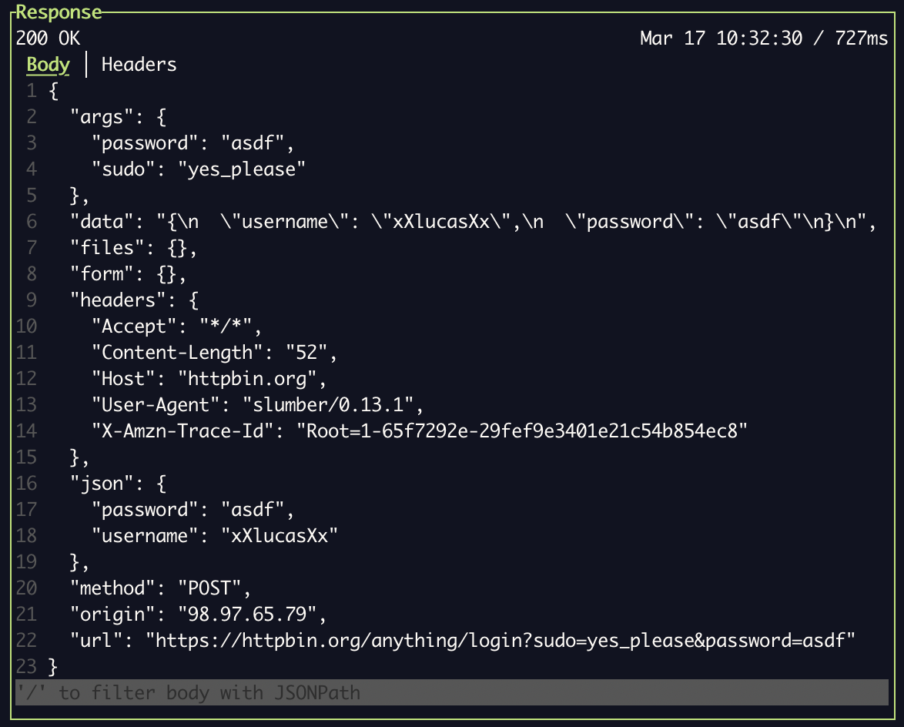
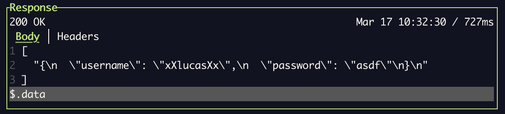

Introduction
Slumber is a terminal-based HTTP client, built for interacting with REST and other HTTP clients. It has two usage modes: Terminal User Interface (TUI) and Command Line Interface (CLI). The TUI is the most useful, and allows for interactively sending requests and viewing responses. The CLI is useful for sending quick requests and scripting.
The goal of Slumber is to be easy to use, configurable, and sharable. To that end, configuration is defined in a YAML file called the request collection. Both usage modes (TUI and CLI) share the same basic configuration, which is called the request collection.
Check out the Getting Started guide to try it out, or move onto Key Concepts to start learning in depth about Slumber.
Install
Getting Started
Quick Start
Once you've installed Slumber, setup is easy.
1. Create a Slumber collection file
Slumber's core feature is that it's source-based. That means you write down your configuration in a file first, then run Slumber and it reads the file. This differs from other popular clients such as Postman and Insomnia. The goal of being source-based is to make it easy to save and share your configurations.
To get started, create a file called slumber.yml and add the following contents:
requests:
get: !request
method: GET
url: https://httpbin.org/get
Note: the
!requesttag, which tells Slumber that this is a request recipe, not a folder. This is YAML's tag syntax, which is used commonly throughout Slumber to provide explicit configuration.
2. Run Slumber
slumber
Going Further
Here's a more complete example:
# slumber.yml
profiles:
local:
data:
host: http://localhost:5000
production:
data:
host: https://myfishes.fish
requests:
create_fish: !request
method: POST
url: "{{host}}/fishes"
body: >
{"kind": "barracuda", "name": "Jimmy"}
list_fish: !request
method: GET
url: "{{host}}/fishes"
query:
big: true
This request collection uses templates and profiles allow you to dynamically change the target host.
Key Concepts
There are a handful of key concepts you need to understand how to effectively configure and use Slumber. You can read about each one in detail on its linked API reference page.
Request Collection
The collection is the main form of configuration. It defines a set of request recipes, which enable Slumber to make requests to your API.
Request Recipe
A recipe defines which HTTP requests Slumber can make. A recipe generally correponds to one endpoint on an API, although you can create as many recipes per endpoint as you'd like.
Template
Templates are Slumber's most powerful feature. They allow you to dynamically build URLs, query parameters, request bodies, etc. using predefined or dynamic values.
Profile
A profile is a set of static template values. A collection can contain a list of profiles, allowing you to quickly switch between different sets of values. This is useful for using different deployment environments, different sets of IDs, etc.
Terminal User Interface
The Terminal User Interface (TUI) is the primary use case for Slumber. It provides a long-lived, interactive interface for sending HTTP requests, akin to Insomnia or Postman. The difference of course is Slumber runs entirely in the terminal.
To start the TUI, simply run:
slumber
This will detect your request collection file according to the protocol. If you want to load a different file, you can use the --file parameter:
slumber --file my-slumber.yml
Auto-Reload
Once you start your Slumber, that session is tied to a single collection file. Whenever that file is modified, Slumber will automatically reload it and changes will immediately be reflected in the TUI. If auto-reload isn't working for some reason, you can manually reload the file with the r key.
Multiple Sessions
Slumber supports running multiple sessions at once, even on the same collection. Request history is stored in a thread-safe SQLite, so multiple sessions can safely interact simultaneously.
If you frequently run multiple sessions together and want to quickly switch between them, consider a configurable terminal manager like tmux or Zellij.
Command Line Interface
While Slumber is primary intended as a TUI, it also provides a Command Line Interface (CLI). The CLI can be used to send requests, just like the TUI. It also provides some utility commands for functionality not available in the TUI. For a full list of available commands see the side bar or run:
slumber help
Some common CLI use cases:
- Send requests
- Import from an external format
- Generate request in an external format (e.g. curl)
- View Slumber configuration/metadata
Templates
Templates enable dynamic string construction. Slumber's template language is relatively simple, compared to complex HTML templating languages like Handlebars or Jinja. The goal is to be intuitive and unsurprising. It doesn't support complex features like loops, conditionals, etc.
Most string values (i.e. not keys) in a request collection are templates, meaning they support templating. The syntax for templating a value into a string is double curly braces {{...}}. The contents inside the braces tell Slumber how to retrieve the dynamic value.
This guide serves as a functional example of how to use templates. For detailed information on options available, see the API reference.
A Basic Example
Let's start with a simple example. Let's say you're working on a fish-themed website, and you want to make requests both to your local stack and the deployed site. Templates, combined with profiles, allow you to easily switch between hosts:
Note: for the purposes of these examples, I've made up some theoretical endpoints and responses, following standard REST practice. This isn't a real API but it should get the point across.
Additionally, these examples will use the CLI because it's easy to demonstrate in text. All these concepts apply equally to the TUI.
profiles:
local:
data:
host: http://localhost:5000
production:
data:
host: https://myfishes.fish
requests:
list_fish: !request
method: GET
url: "{{host}}/fishes"
query:
big: true
Now you can easily select which host to hit. In the TUI, this is done via the Profile list. In the CLI, use the --profile option:
> slumber request --profile local list_fish
# http://localhost:5000/fishes
# Only one fish :(
[{"id": 1, "kind": "tuna", "name": "Bart"}]
> slumber request --profile production list_fish
# https://myfishes.fish/fishes
# More fish!
[
{"id": 1, "kind": "marlin", "name": "Kim"},
{"id": 2, "kind": "salmon", "name": "Francis"}
]
Chaining Requests
Profile values are helpful when you want to switch between statically known values, but what if you need a value from a different response? Let's say you want to create a fish, then use its ID in a subsequent request. Then you want chains.
profiles:
local:
data:
host: http://localhost:5000
chains:
fish_id:
source: !request
recipe: create_fish
# This uses JSONPath to get a single value from the response body
# https://jsonpath.com/
selector: $.id
requests:
create_fish: !request
method: POST
url: "{{host}}/fishes"
body: >
{"kind": "barracuda", "name": "Jimmy"}
get_fish: !request
method: GET
url: "{{host}}/fishes/{{chains.fish_id}}"
Now we can make our requests back-to-back:
> slumber request -p local create_fish
# http://localhost:5000/fishes
{"id": 2, "kind": "barracuda", "name": "Jimmy"}
# http://localhost:5000/fishes/2
> slumber request -p local get_fish
{"id": 2, "kind": "barracuda", "name": "Jimmy"}
This demonstrates how to use chains to link responses to requests. Chains can link to other value sources though, including user-provided values (via a prompt) and shell commands. For a full list of chain types, see the Chain API reference.
Nested Templates
What if you need a more complex chained value? Let's say the endpoint to get a fish requires the fish ID to be in the format fish_{id}. Why? Don't worry about it. Fish are particular. Templates support nesting implicitly. You can use this to compose template values into more complex strings. Just be careful not to trigger infinite recursion!
profiles:
local:
data:
host: http://localhost:5000
fish_id: "fish_{{chains.fish_id}}"
chains:
fish_id:
source: !request
recipe: create_fish
selector: $.id
requests:
create_fish: !request
method: POST
url: "{{host}}/fishes"
body: >
{"kind": "barracuda", "name": "Jimmy"}
get_fish: !request
method: GET
url: "{{host}}/fishes/{{fish_id}}"
And let's see it in action:
> slumber request -p local create_fish
# http://localhost:5000/fishes
{"id": 2, "kind": "barracuda", "name": "Jimmy"}
> slumber request -p local get_fish
# http://localhost:5000/fishes/fish_2
{"id": "fish_2", "kind": "barracuda", "name": "Jimmy"}
Chains
Chains are Slumber's most powerful feature. They allow you to dynamically build requests based on other responses, shell commands, and more.
Chains in Practice
The most common example of a chain is with a login request. You can define a recipe to log in to a service using username+password, then get the returned API token to authenticate subsequent requests. Of course, we don't want to store our credentials in Slumber file, so we can also use chains to fetch those. Let's see this in action:
chains:
username:
source: !file
path: ./username.txt
password:
source: !file
path: ./password.txt
auth_token:
source: !request
recipe: login
selector: $.token
requests:
# This returns a response like {"token": "abc123"}
login: !request
method: POST
url: "https://myfishes.fish/login"
body: |
{
"username": "{{chains.username}}",
"password": "{{chains.password}}"
}
get_user: !request
method: GET
url: "https://myfishes.fish/current-user"
authentication: !bearer "{{chains.auth_token}}"
For more info on the
selectorfield, see Data Filtering & Querying
Automatically Executing the Upstream Request
By default, the chained request (i.e. the "upstream" request) has to be executed manually to get the login token. You can have the upstream request automatically execute using the trigger field:
chains:
auth_token:
source: !request
recipe: login
# Execute only if we've never logged in before
trigger: !no_history
selector: $.token
---
chains:
auth_token:
source: !request
recipe: login
# Execute only if the latest response is older than a day. Useful if your
# token expires after a fixed amount of time
trigger: !expire 1d
selector: $.token
---
chains:
auth_token:
source: !request
recipe: login
# Always execute
trigger: !always
selector: $.token
For more detail about the various trigger variants, including the syntax of the expire variant, see the API docs.
Chaining Chains
Chains on their own are powerful enough, but what makes them really cool is that the arguments to a chain are templates in themselves, meaning you can use nested templates to chain chains to other chains! Wait, what?
Let's say the login response doesn't return JSON, but instead the response looks like this:
token:abc123
Clearly this isn't a well-designed API, but sometimes that's all you get. You can use a nested chain with cut to parse this:
chains:
username:
source: !file
path: ./username.txt
password_encrypted:
source: !file
path: ./password.txt
password:
source: !command
command:
auth_token_raw:
source: !request
recipe: login
auth_token:
source: !command
command: [sh, -c, "echo '{{chains.auth_token_raw}}' | cut -d':' -f2"]
requests:
login: !request
method: POST
url: "https://myfishes.fish/login"
body: |
{
"username": "{{chains.username}}",
"password": "{{chains.password}}"
}
get_user: !request
method: GET
url: "https://myfishes.fish/current-user"
authentication: !bearer "{{chains.auth_token}}"
This means you can use external commands to perform any manipulation on data that you want.
Collection Reuse & Inheritance
The Problem
Let's start with an example of something that sucks. Let's say you're making requests to a fish-themed JSON API, and it requires authentication. Gotta protect your fish! Your request collection might look like so:
profiles:
production:
data:
host: https://myfishes.fish
fish_id: 6
chains:
token:
source: !file
path: ./api_token.txt
requests:
list_fish: !request
method: GET
url: "{{host}}/fishes"
query:
big: true
headers:
Accept: application/json
authentication: !bearer "{{chains.token}}"
get_fish: !request
method: GET
url: "{{host}}/fishes/{{fish_id}}"
headers:
Accept: application/json
authentication: !bearer "{{chains.token}}"
The Solution
You've heard of DRY, so you know this is bad. Every new request recipe requires re-specifying the headers, and if anything about the authorization changes, you have to change it in multiple places.
You can easily re-use components of your collection using YAML's merge feature.
profiles:
production:
data:
host: https://myfishes.fish
chains:
token:
source: !file
path: ./api_token.txt
# The name here is arbitrary, pick any name you like
request_base: &request_base
headers:
Accept: application/json
authentication: !bearer "{{chains.token}}"
requests:
list_fish: !request
<<: *request_base
method: GET
url: "{{host}}/fishes"
query:
big: true
get_fish: !request
<<: *request_base
method: GET
url: "{{host}}/fishes/{{chains.fish_id}}"
Great! That's so much cleaner. Now each recipe can inherit whatever base properties you want just by including <<: *request_base. This is still a bit repetitive, but it has the advantage of being explicit. You may have some requests that don't want to include those values.
Recursive Inheritance
But wait! What if you have a new request that needs an additional header? Unfortunately, YAML's merge feature does not support recursive merging. If you need to extend the headers map from the base request, you'll need to pull that map in manually:
profiles:
production:
data:
host: https://myfishes.fish
chains:
token:
source: !file
path: ./api_token.txt
# The name here is arbitrary, pick any name you like
request_base: &request_base
headers: &headers_base # This will let us pull in the header map to extend it
Accept: application/json
authentication: !bearer "{{chains.token}}"
requests:
list_fish: !request
<<: *request_base
method: GET
url: "{{host}}/fishes"
query:
big: true
get_fish: !request
<<: *request_base
method: GET
url: "{{host}}/fishes/{{chains.fish_id}}"
create_fish: !request
<<: *request_base
method: POST
url: "{{host}}/fishes"
headers:
<<: *headers_base
Content-Type: application/json
body: >
{"kind": "barracuda", "name": "Jimmy"}
Data Filtering & Querying
Slumber supports querying data structures to transform or reduce response data.
There are two main use cases for querying:
- In chained template values, to extract data
- Provided via chain's
selectorargument
- Provided via chain's
- In the TUI response body browser, to limit the response data shown
Regardless of data format, querying is done via JSONPath. For non-JSON formats, the data will be converted to JSON, queried, and converted back. This keeps querying simple and uniform across data types.
Querying Chained Values
Here's some examples of using queries to extract data from a chained value. Let's say you have two chained value sources. The first is a JSON file, called creds.json. It has the following contents:
{ "user": "fishman", "pw": "hunter2" }
We'll use these credentials to log in and get an API token, so the second data source is the login response, which looks like so:
{ "token": "abcdef123" }
chains:
username:
source: !file
path: ./creds.json
selector: $.user
password:
source: !file
path: ./creds.json
selector: $.pw
auth_token:
source: !request
recipe: login
selector: $.token
requests:
login: !request
method: POST
url: "https://myfishes.fish/anything/login"
body: |
{
"username": "{{chains.username}}",
"password": "{{chains.password}}"
}
get_user: !request
method: GET
url: "https://myfishes.fish/anything/current-user"
query:
auth: "{{chains.auth_token}}"
While this example simple extracts inner fields, JSONPath can be used for much more powerful transformations. See the JSONPath docs or this JSONPath editor for more examples.
More Powerful Querying with Nested Chains
If JSONPath isn't enough for the data extraction you need, you can use nested chains to filter with whatever external programs you want. For example, if you want to use jq instead:
chains:
username:
source: !file
path: ./creds.json
selector: $.user
password:
source: !file
path: ./creds.json
selector: $.pw
auth_token_raw:
source: !request
recipe: login
auth_token:
source: !command
command: [sh, -c, "echo '{{chains.auth_token_raw}}' | jq .token"]
requests:
login: !request
method: POST
url: "https://myfishes.fish/anything/login"
body: |
{
"username": "{{chains.username}}",
"password": "{{chains.password}}"
}
get_user: !request
method: GET
url: "https://myfishes.fish/anything/current-user"
query:
auth: "{{chains.auth_token}}"
You can use this capability to manipulate responses via grep, awk, or any other program you like.
Querying Response in TUI
You can visually query a response body using the filter box at the bottom. Here is a full response, with no query applied:

And here it is with the query $.data applied:

Importing External Collections
See the slumber import subcommand.
slumber request
Send an HTTP request. There are many use cases to which the CLI is better suited than the TUI for sending requests, including:
- Sending a single one-off request
- Sending many requests in parallel
- Automating requests in a script
- Sharing requests with others
See slumber request --help for more options.
Examples
Given this request collection:
profiles:
production:
data:
host: https://myfishes.fish
requests:
list_fish: !request
method: GET
url: "{{host}}/fishes"
query:
big: true
slumber request --profile production list_fishes
slumber rq -p production list_fishes # rq is a shorter alias
slumber -f fishes.yml -p production list_fishes # Different collection file
Overrides
You can manually override template values using CLI arguments. This means the template renderer will use the override value in place of calculating it. For example:
slumber request list_fishes --override host=https://dev.myfishes.fish
This can also be used to override chained values:
slumber request login --override chains.password=hunter2
Exit Code
By default, the CLI returns exit code 1 if there is a fatal error, e.g. the request failed to build or a network error occurred. If an HTTP response was received and parsed, the process will exit with code 0, regardless of HTTP status.
If you want to set the exit code based on the HTTP response status, use the flag --exit-code.
| Code | Reason |
|---|---|
| 0 | HTTP response received |
| 1 | Fatal error |
| 2 | HTTP response had status >=400 (with --exit-code) |
slumber import
Generate a Slumber collection file based on an external format. Currently the only supported format is Insomnia, but more are planned.
See slumber import --help for more options.
Disclaimer
Importers are approximate. They'll give the you skeleton of a collection file, but don't expect 100% equivalency. They save a lot of tedious work for you, but you'll generally still need to do some manual work on the collection file to get what you want.
Examples
The general format is:
slumber import <format> <input> [output]
For example, to import from an Insomnia collection insomnia.json:
slumber import insomnia insomnia.json slumber.yml
Formats
Supported formats:
- Insomnia
Requested formats:
If you'd like another format supported, please open an issue.
slumber generate
Generate an HTTP request in an external format. Currently the only supported format is cURL.
Examples
Given this request collection:
profiles:
production:
data:
host: https://myfishes.fish
requests:
list_fish: !request
method: GET
url: "{{host}}/fishes"
query:
big: true
slumber generate curl --profile production list_fishes
Overrides
The generate subcommand supports overriding template values in the same that slumber request does. See the request subcommand docs for more.
See slumber generate --help for more options.
slumber collections
View and manipulate stored collection history/state. Slumber uses a local database to store all request/response history, as well as UI state and other persisted values. As a user, you rarely have to worry about this. The most common scenario in which you do have to is if you've renamed a collection file and want to migrate the history to match the new path.
See slumber collections --help for more options.
History & Migration
Each collection needs a unique ID, which generated when the collection is first loaded by Slumber and bound to the collection file's path. This ID is used to persist request history and other data related to the collection. If you move a collection file, a new ID will be generated and it will be unlinked from its previous history. If you want to retain that history, you can migrate data from the old ID to the new one like so:
slumber collections migrate slumber-old.yml slumber-new.yml
If you don't remember the path of the old file, you can list all known collections with:
slumber collections list
slumber show
Print metadata about Slumber.
See slumber show --help for more options.
Examples
slumber show paths # Show paths of various Slumber data files/directories
slumber show config # Print global configuration
slumber show collection # Print collection file
Request Collection
The request collection is the primary configuration for Slumber. It defines which requests can be made, and how to make them. When running a slumber instance, a single collection file is loaded. If you want to work with multiple collections at once, you'll have to run multiple instances of Slumber.
Collection files are designed to be sharable, meaning you can commit them to your Git repo. The most common pattern is to create one collection per API repo, and check it into the repo so other developers of the API can use the same collection. This makes it easy for any new developer or user to learn how to use an API.
Format & Loading
A collection is defined as a YAML file. When you run slumber, it will search the current directory for the following default collection files, in order:
slumber.ymlslumber.yaml.slumber.yml.slumber.yaml
Whichever of those files is found first will be used. If you want to use a different file for your collection (e.g. if you want to store multiple collections in the same directory), you can override the auto-search with the --file (or -f) command line argument. E.g.:
slumber -f my-collection.yml
Fields
A request collection supports the following top-level fields:
| Field | Type | Description | Default |
|---|---|---|---|
profiles | mapping[string, Profile] | Static template values | {} |
requests | mapping[string, RequestRecipe] | Requests Slumber can send | {} |
chains | mapping[string, Chain] | Complex template values | {} |
.ignore | Any | Extra data to be ignored by Slumber (useful with YAML anchors) |
Examples
profiles:
local:
name: Local
data:
host: http://localhost:5000
user_guid: abc123
prd:
name: Production
data:
host: https://httpbin.org
user_guid: abc123
chains:
username:
source: !file
path: ./username.txt
password:
source: !prompt
message: Password
sensitive: true
auth_token:
source: !request
recipe: login
selector: $.token
# Use YAML anchors for de-duplication (Anything under .ignore is ignored)
.ignore:
base: &base
headers:
Accept: application/json
Content-Type: application/json
requests:
login: !request
<<: *base
method: POST
url: "{{host}}/anything/login"
body: |
{
"username": "{{chains.username}}",
"password": "{{chains.password}}"
}
# Folders can be used to keep your recipes organized
users: !folder
requests:
get_user: !request
<<: *base
name: Get User
method: GET
url: "{{host}}/anything/current-user"
authentication: !bearer "{{chains.auth_token}}"
update_user: !request
<<: *base
name: Update User
method: PUT
url: "{{host}}/anything/current-user"
authentication: !bearer "{{chains.auth_token}}"
body: >
{"username": "Kenny"}
Profile
A profile is a collection of static template values. It's useful for configuring and switching between multiple different environments/settings/etc. Profile values are all templates themselves, so nested values can be used.
Fields
| Field | Type | Description | Default |
|---|---|---|---|
name | string | Descriptive name to use in the UI | Value of key in parent |
data | mapping[string, Template] | Fields, mapped to their values | {} |
Examples
local:
name: Local
data:
host: localhost:5000
url: "https://{{host}}"
user_guid: abc123
Request Recipe
A request recipe defines how to make a particular request. For a REST API, you'll typically create one request recipe per endpoint. Other HTTP tools often call this just a "request", but that name can be confusing because "request" can also refer to a single instance of an HTTP request. Slumber uses the term "recipe" because it's used to render many requests. The word "template" would work as a synonym here, although we avoid that term here because it also refers to string templates.
Recipes can be organized into folders. This means your set of recipes can form a tree structure. Folders are purely organizational, and don't impact the behavior of their child recipes at all.
The IDs of your folders/recipes must be globally unique. This means you can't have two recipes (or two folders, or one recipe and one folder) with the same associated key, even if they are in different folders. This restriction makes it easy to refer to recipes unambiguously using a single ID, which is helpful for CLI usage and data storage.
Recipe Fields
The tag for a recipe is !request (see examples).
| Field | Type | Description | Default |
|---|---|---|---|
name | string | Descriptive name to use in the UI | Value of key in parent |
method | string | HTTP request method | Required |
url | Template | HTTP request URL | Required |
query | mapping[string, Template] | HTTP request query parameters | {} |
headers | mapping[string, Template] | HTTP request headers | {} |
authentication | Authentication | Authentication scheme | null |
body | Template | HTTP request body | null |
Folder Fields
The tag for a folder is !folder (see examples).
| Field | Type | Description | Default |
|---|---|---|---|
name | string | Descriptive name to use in the UI | Value of key in parent |
children | mapping[string, RequestRecipe] | Recipes organized under this folder | {} |
Examples
login: !request
name: Login
method: POST
url: "{{host}}/anything/login"
headers:
accept: application/json
content-type: application/json
query:
root_access: yes_please
body: |
{
"username": "{{chains.username}}",
"password": "{{chains.password}}"
}
---
fish: !folder
name: Users
requests:
create_fish: !request
method: POST
url: "{{host}}/fishes"
body: >
{"kind": "barracuda", "name": "Jimmy"}
list_fish: !request
method: GET
url: "{{host}}/fishes"
query:
big: true
Authentication
Authentication provides shortcuts for common HTTP authentication schemes. It populates the authentication field of a recipe. There are multiple source types, and the type is specified using YAML's tag syntax.
Variants
| Variant | Type | Value |
|---|---|---|
basic | Basic Authentication | Basic authentication credentials |
bearer | string | Bearer token |
Basic Authentication
Basic authentication contains a username and optional password.
| Field | Type | Description | Default |
|---|---|---|---|
username | string | Username | Required |
password | string | Password | "" |
Examples
!basic
username: user
password: pass
---
!bearer 4J2e0TYqKA3gFllfTu17OF7n8g1CeAxZyi/MK5g40/o=
Chain
A chain is a intermediate data type to enable complex template values. Chains also provide additional customization, such as marking values as sensitive.
To use a chain in a template, reference it as {{chains.<id>}}.
Fields
| Field | Type | Description | Default |
|---|---|---|---|
source | ChainSource | Source of the chained value | Required |
sensitive | boolean | Should the value be hidden in the UI? | false |
selector | JSONPath | Selector to transform/narrow down results in a chained value. See Filtering & Querying | null |
content_type | ContentType | Force content type. Not required for request and file chains, as long as the Content-Type header/file extension matches the data |
See the ChainSource docs for detail on the different types of chainable values.
Examples
# Load chained value from a file
username:
source: !file
path: ./username.txt
---
# Prompt the user for a value whenever the request is made
password:
source: !prompt
message: Enter Password
sensitive: true
---
# Use a value from another response
# Assume the request recipe with ID `login` returns a body like `{"token": "foo"}`
auth_token:
source: !request
recipe: login
selector: $.token
Chain Source
A chain source defines how a Chain gets its value. It populates the source field of a chain. There are multiple source types, and the type is specified using YAML's tag syntax.
Examples
See the Chain docs for more complete examples.
!request
recipe: login
trigger: !expire 12h
---
!command
command: ["echo", "-n", "hello"]
---
!file
path: ./username.txt
---
!prompt
message: Enter Password
Variants
| Variant | Type | Description |
|---|---|---|
request | ChainSource::Request | Body of the most recent response for a specific request recipe. |
command | ChainSource::Command | Stdout of the executed command |
file | ChainSource::File | Contents of the file |
prompt | ChainSource::Prompt | Value entered by the user |
Request
Chain a value from the body of another response. This can reference either
| Field | Type | Description | Default |
|---|---|---|---|
recipe | string | Recipe to load value from | Required |
trigger | ChainRequestTrigger | When the upstream recipe should be executed, as opposed to loaded from memory | !never |
Chain Request Trigger
This defines when a chained request should be triggered (i.e. when to execute a new request) versus when to use the most recent from history.
| Variant | Type | Description |
|---|---|---|
never | None | Never trigger. The most recent response in history for the upstream recipe will always be used; error out if there is none |
no_history | None | Trigger only if there is no response in history for the upstream recipe |
expire | Duration | Trigger if the most recent response for the upstream recipe is older than some duration, or there is none |
always | None | Always execute the upstream request |
Duration is specified as an integer followed by a unit (with no space). Supported units are:
s(seconds)m(minutes)h(hours)d(days)
Examples
!request
recipe: login
trigger: !never # This is the default, so the same as omitting
---
!request
recipe: login
trigger: !no_history
---
!request
recipe: login
trigger: !expire 12h
---
!request
recipe: login
trigger: !expire 30s
---
!request
recipe: login
trigger: !always
Command
Execute a command and use its stdout as the rendered value.
| Field | Type | Description | Default |
|---|---|---|---|
command | Template[] | Command to execute, in the format [program, ...arguments] | Required |
File
Read a file and use its contents as the rendered value.
| Field | Type | Description | Default |
|---|---|---|---|
path | Template | Path of the file to load (relative to current directory) | Required |
Prompt
Prompt the user for input to use as the rendered value.
| Field | Type | Description | Default |
|---|---|---|---|
message | Template | Descriptive prompt for the user | Chain ID |
default | Template | Value to pre-populated the prompt textbox. Note: Dur to a library limitation, not supported on chains with sensitive: true in the CLI | null |
Template
A template is represented in YAML as a normal string, and thus supports all of YAML's string syntaxes. Templates receive post-processing that injects dynamic values into the string. A templated value is represented with {{...}}.
Templates can generally be used in any value in a request recipe (not in keys). They cannot be used in profiles or chains, to avoid the potential for recursive templating. If this feature would be useful to you, le tme know.
For more detail on usage and examples, see the user guide page on templates.
Template Sources
There are several ways of sourcing templating values:
| Source | Syntax | Description |
|---|---|---|
| Profile Field | {{field_name}} | Static value from a profile |
| Environment Variable | {{env.VARIABLE}} | Environment variable from parent shell/process |
| Chain | {{chains.chain_id}} | Complex chained value |
Examples
# Profile value
"hello, {{location}}"
---
# Multiple dynamic values
"{{greeting}}, {{location}}"
---
# Environment variable
"hello, {{env.LOCATION}}"
---
# Chained value
"hello, {{chains.where_am_i}}"
---
# No dynamic values
"hello, world!"
Content Type
Content type defines the various data formats that Slumber recognizes and can manipulate. Slumber is capable of displaying any text-based data format, but only specific formats support additional features such as querying and formatting.
For chained requests, Slumber uses the HTTP Content-Type header to detect the content type. For chained files, it uses the file extension. For other chain sources, or if the Content-Type header/file extension is missing or incorrect, you'll have to manually provide the content type via the chain content_type field.
Supported Content Types
| Content Type | HTTP Header | File Extension(s) |
|---|---|---|
| JSON | application/json | json |
Configuration
Configuration provides application-level settings, as opposed to collection-level settings.
Location & Creation
Configuration is stored in the Slumber root directory, under the file config.yml. To find the root directory, you can run:
slumber show dir
To quickly create and edit the file:
# Replace vim with your favorite text editor
vim $(slumber show dir)/config.yml
If the root directory doesn't exist yet, you can create it yourself or have Slumber create it by simply starting the TUI.
Fields
| Field | Type | Description | Default |
|---|---|---|---|
preview_templates | boolean | Render template values in the TUI? If false, the raw template will be shown. | true |
ignore_certificate_hosts | string[] | Hostnames whose TLS certificate errors will be ignored. More info | [] |
input_bindings | mapping[Action, KeyCombination[]] | Override default input bindings. More info | {} |
Input Bindings
You can customize all input bindings in the configuration. An input binding is a mapping between an action (a high-level verb) and one or more key combinations.
For example if you want vim bindings (h/j/k/l instead of left/down/up/right):
# config.yaml
input_bindings:
up: [k]
down: [j]
left: [h]
right: [l]
scroll_left: [shift h]
scroll_right: [shift l]
select_recipe_list: [p] # Rebind from `l`
Each action maps to a list of key combinations, because you can map multiple combinations to a single action. Hitting any of these combinations will trigger the action. By defining a binding in the config, you will replace the default binding for that action. If you want to retain the default binding but add an additional, you will need to include the default in your list of custom bindings. For example, if you want vim bindings but also want to leave the existing arrow key controls in place:
input_bindings:
up: [up, k]
down: [down, j]
left: [left, h]
right: [right, l]
scroll_left: [shift left, shift h]
scroll_right: [shift right, shift l]
select_recipe_list: [p] # Rebind from `l`
Actions
| Action | Default Binding |
|---|---|
left_click | None |
right_click | None |
scroll_up | None |
scroll_down | None |
scroll_left | shift left |
scroll_right | shift right |
quit | q |
force_quit | ctrl c |
previous_pane | backtab (AKA shift tab) |
next_pane | tab |
up | up |
down | down |
left | left |
right | right |
page_up | pgup |
page_down | pgdn |
home | home |
end | end |
submit | enter |
cancel | esc |
search | / |
reload_collection | f5 |
fullscreen | f |
open_actions | x |
open_help | ? |
select_profile_list | p |
select_recipe_list | l |
select_recipe | c |
select_request | r |
select_response | s |
Note: mouse bindings are not configurable; mouse actions such as
left_clickcan be bound to a key combination, which cannot be unbound from the default mouse action.
Key Combinations
A key combination consists of zero or more modifiers, followed by a single key code. The modifiers and the code all each separated by a single space. Some examples:
wshift f2alt shift cctrl alt delete
Key Codes
All single-character keys (e.g. w, /, =, etc.) are not listed; the code is just the character.
escape/escenterleftrightupdownhomeendpageup/pguppagedown/pgdntabbacktabbackspacedelete/delinsert/inscapslock/capsscrolllocknumlockprintscreenpausebreak(sometimes just called Pause; not the same as the Pause media key)menukeypadbeginf1f2f3f4f5f6f7f8f9f10f11f12spaceplaypause(the media key, not Pause/Break)playpausereversestopfastforwardrewindtracknexttrackpreviousrecordlowervolumeraisevolumemute
Key Modifiers
shiftaltctrlsuperhypermeta
Lost Request History
If you've lost your request history, there are a few possible causes. In most cases request history is non-essential, but if you really want it back there may be a fix available.
If none of these fixes worked for you, and you still want your request history back, please open an issue and provide as much detail as possible.
Moved Collection File
If history is lost for an entire collection, the most likely cause is that you moved your collection file. To fix this, you can migrate your request history.
Changed Recipe ID
If you've lost request history for just a single recipe, you likely changed the recipe ID, which is the key associated with the recipe in your collection file (the parent folder(s) do not affect this). Unfortunately currently the only way to fix this is to revert to the old recipe ID.
Wrong Profile or Changed Profile ID
Each request+response in history is associated with a specific profile. If you're not seeing your expected request history, you may have a different profile selected than the one used to send the request(s).
Alternatively, you may have changed the ID of the associated profile. If so, unfortunately the only way to fix this is to revert to the old profile ID.
TLS Certificate Errors
If you're receiving certificate errors such as this one:
invalid peer certificate: UnknownIssuer
This is probably because the TLS certificate of the server you're hitting is expired, invalid, or self-signed. The best solution is to fix the error on the server, either by renewing the certificate or creating a signed one. In most cases this is the best solution. If not possible, you should just disable TLS on your server because it's not doing anything for you anyway.
If you can't or don't want to fix the certificate, and you need to keep TLS enabled for some reason, it's possible to configure Slumber to ignore TLS certificate errors on certain hosts.
WARNING: This is dangerous. You will be susceptible to MITM attacks on these hosts. Only do this if you control the server you're hitting, and are confident your network is not compromised.
- Open your Slumber configuration
- Add the field
ignore_certificate_hosts: ["<hostname>"]<hostname>is the domain or IP of the server you're requesting from